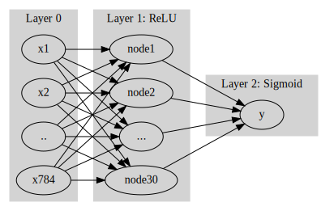
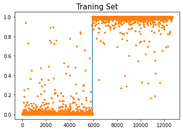

10/18: [이미지자료분석] CNN
CNN 예비학습, CNN 구현 with CPU, CNN 구현 with GPU, BCEWithLogisticLoss
- toc:true
- branch: master
- badges: true
- comments: true
- author: 최규빈
강의영상
youtube: https://youtube.com/playlist?list=PLQqh36zP38-ymnoeGZPPvaaB35JmhRiTi
import
data
- download data
- training set
- test set
CNN 예비학습
기존의 MLP 모형
- 교재의 모형
gv('''
splines=line
subgraph cluster_1{
style=filled;
color=lightgrey;
"x1"
"x2"
".."
"x784"
label = "Layer 0"
}
subgraph cluster_2{
style=filled;
color=lightgrey;
"x1" -> "node1"
"x2" -> "node1"
".." -> "node1"
"x784" -> "node1"
"x1" -> "node2"
"x2" -> "node2"
".." -> "node2"
"x784" -> "node2"
"x1" -> "..."
"x2" -> "..."
".." -> "..."
"x784" -> "..."
"x1" -> "node30"
"x2" -> "node30"
".." -> "node30"
"x784" -> "node30"
label = "Layer 1: ReLU"
}
subgraph cluster_3{
style=filled;
color=lightgrey;
"node1" -> "y"
"node2" -> "y"
"..." -> "y"
"node30" -> "y"
label = "Layer 2: Sigmoid"
}
''')
- 왜 28 \(\times\) 28 이미지를 784개의 벡터로 만든 다음에 모형을 돌려야 하는가?
- 기존에 개발된 모형이 회귀분석 기반으로 되어있어서 결국 회귀분석 틀에 짜 맞추어서 이미지자료를 분석하는 느낌
- observation의 차원은 \(784\)가 아니라 \(1\times (28\times 28)\)이 되어야 맞다.
새로운 아키텍처의 제시
- 예전
\(\underset{(n,784)}{\bf X} \overset{l_1}{\to} \underset{(n,30)}{\boldsymbol u^{(1)}} \overset{relu}{\to} \underset{(n,30)}{\boldsymbol v^{(1)}} \overset{l_2}{\to} \underset{(n,1)}{\boldsymbol u^{(2)}} \overset{sig}{\to} \underset{(n,1)}{\boldsymbol v^{(2)}}=\underset{(n,1)}{\hat{\boldsymbol y}}\)
- \(l_1\): 선형변환, feature를 뻥튀기하는 역할
- \(relu\): 뻥튀기된 feature에 비선형을 추가하여 표현력 극대화
- \(l_2\): 선형변환, 뻥튀기된 feature를 요약 하는 역할 (=데이터를 요약하는 역할)
- 새로운 아키텍처 - \(conv\): feature를 뻥튀기하는 역할 (2d ver \(l_1\) 느낌) - \(relu\): - \(pooling\): 데이터를 요약하는 역할
CONV 레이어 (선형변환의 2D 버전)
- 우선 연산하는 방법만 살펴보자.
(예시1)
torch.manual_seed(43052)
_conv = torch.nn.Conv2d(1,1,(2,2)) # 입력1, 출력1, (2,2) window size
_conv.weight.data, _conv.bias.data(tensor([[[[-0.1733, -0.4235],
[ 0.1802, 0.4668]]]]),
tensor([0.2037]))(예시2) 잘하면 평균도 계산하겠다?
(예시3) 이동평균?
tensor([[[ 0., 1., 2., 3., 4.],
[ 5., 6., 7., 8., 9.],
[10., 11., 12., 13., 14.],
[15., 16., 17., 18., 19.],
[20., 21., 22., 23., 24.]]])tensor([[[ 3., 4., 5., 6.],
[ 8., 9., 10., 11.],
[13., 14., 15., 16.],
[18., 19., 20., 21.]]], grad_fn=<SqueezeBackward1>)(예시4) window size가 증가한다면? (2d의 이동평균느낌)
(tensor([[[ 0., 1., 2., 3., 4.],
[ 5., 6., 7., 8., 9.],
[10., 11., 12., 13., 14.],
[15., 16., 17., 18., 19.],
[20., 21., 22., 23., 24.]]]),
tensor([[[ 6.0000, 7.0000, 8.0000],
[11.0000, 12.0000, 13.0000],
[16.0000, 17.0000, 18.0000]]], grad_fn=<SqueezeBackward1>))(예시5) 피처뻥튀기
(torch.Size([8, 1, 2, 2]), torch.Size([8]))tensor([-0.3464, 0.2739, 0.1069, 0.6105, 0.0432, 0.8390, 0.2353, 0.2345],
grad_fn=<ReshapeAliasBackward0>)torch.sum(_conv.weight.data[0,...])+_conv.bias.data[0],\
torch.sum(_conv.weight.data[1,...])+_conv.bias.data[1](tensor(-0.3464), tensor(0.2739))결국 아래를 계산한다는 의미
tensor([-0.3464, 0.2739, 0.1069, 0.6105, 0.0432, 0.8390, 0.2353, 0.2345])tensor([-0.3464, 0.2739, 0.1069, 0.6105, 0.0432, 0.8390, 0.2353, 0.2345],
grad_fn=<ReshapeAliasBackward0>)(잔소리) axis 사용 익숙하지 않으면 아래 꼭 들으세요..
- https://guebin.github.io/IP2022/2022/04/11/(6주차)-4월11일.html , numpy공부 4단계: 축
ReLU (2d)
tensor([[[ 0.2656, 0.0780, 3.0465, 1.0151, -2.3908],
[ 0.4749, 1.6519, 1.5454, 1.0376, 0.9291],
[-0.7858, 0.4190, 2.6057, -0.4022, 0.2092],
[ 0.9594, 0.6408, -0.0411, -1.0720, -2.0659],
[-0.0996, 1.1351, 0.9758, 0.4952, -0.5475]]])Maxpooling 레이어
(tensor([[[ 0., 1., 2., 3.],
[ 4., 5., 6., 7.],
[ 8., 9., 10., 11.],
[12., 13., 14., 15.]]]),
tensor([[[ 5., 7.],
[13., 15.]]]))(tensor([[[ 0., 1., 2., 3., 4.],
[ 5., 6., 7., 8., 9.],
[10., 11., 12., 13., 14.],
[15., 16., 17., 18., 19.],
[20., 21., 22., 23., 24.]]]),
tensor([[[ 6., 8.],
[16., 18.]]]))CNN 구현 (CPU)
(1) Conv2d
(2) ReLU
(3) MaxPool2D
(4) 적당히 마무리하고 시그모이드 태우자
- 펼치자.
(방법1)
(방법2)
print(X.shape)
print(c1(X).shape)
print(a1(c1(X)).shape)
print(m1(a1(c1(X))).shape)
print(flttn(m1(a1(c1(X)))).shape)torch.Size([12665, 1, 28, 28])
torch.Size([12665, 16, 24, 24])
torch.Size([12665, 16, 24, 24])
torch.Size([12665, 16, 12, 12])
torch.Size([12665, 2304])- 2304 \(\to\) 1 로 차원축소하는 선형레이어를 설계
l1 = torch.nn.Linear(in_features=2304,out_features=1)
print(X.shape)
print(c1(X).shape)
print(a1(c1(X)).shape)
print(m1(a1(c1(X))).shape)
print(flttn(m1(a1(c1(X)))).shape)
print(l1(flttn(m1(a1(c1(X))))).shape)torch.Size([12665, 1, 28, 28])
torch.Size([12665, 16, 24, 24])
torch.Size([12665, 16, 24, 24])
torch.Size([12665, 16, 12, 12])
torch.Size([12665, 2304])
torch.Size([12665, 1])- 시그모이드
l1 = torch.nn.Linear(in_features=2304,out_features=1)
print(X.shape)
print(c1(X).shape)
print(a1(c1(X)).shape)
print(m1(a1(c1(X))).shape)
print(flttn(m1(a1(c1(X)))).shape)
print(l1(flttn(m1(a1(c1(X))))).shape)
print(a1(l1(flttn(m1(a1(c1(X)))))).shape)torch.Size([12665, 1, 28, 28])
torch.Size([12665, 16, 24, 24])
torch.Size([12665, 16, 24, 24])
torch.Size([12665, 16, 12, 12])
torch.Size([12665, 2304])
torch.Size([12665, 1])
torch.Size([12665, 1])- 네트워크 설계
t1= time.time()
for epoc in range(100):
## 1
yhat = net(X)
## 2
loss = loss_fn(yhat,y)
## 3
loss.backward()
## 4
optimizr.step()
optimizr.zero_grad()
t2= time.time()
t2-t151.493837118148804Text(0.5, 1.0, 'Traning Set')
CNN 구현 (GPU)
1. dls
2. lrnr 생성: 아키텍처, 손실함수, 옵티마이저
3. 학습
| epoch | train_loss | valid_loss | time |
|---|---|---|---|
| 0 | 0.904232 | 0.605049 | 00:01 |
| 1 | 0.661176 | 0.371011 | 00:00 |
| 2 | 0.507179 | 0.213586 | 00:00 |
| 3 | 0.392649 | 0.113123 | 00:00 |
| 4 | 0.304377 | 0.065496 | 00:00 |
| 5 | 0.238253 | 0.043172 | 00:00 |
| 6 | 0.188984 | 0.031475 | 00:00 |
| 7 | 0.151837 | 0.024563 | 00:00 |
| 8 | 0.123364 | 0.020047 | 00:00 |
| 9 | 0.101180 | 0.016816 | 00:00 |
4. 예측 및 시각화
Sequential(
(0): Conv2d(1, 16, kernel_size=(5, 5), stride=(1, 1))
(1): ReLU()
(2): MaxPool2d(kernel_size=(2, 2), stride=(2, 2), padding=0, dilation=1, ceil_mode=False)
(3): Flatten(start_dim=1, end_dim=-1)
(4): Linear(in_features=2304, out_features=1, bias=True)
(5): Sigmoid()
)- 결과를 시각화하면 아래와 같다.

- 빠르고 적합결과도 좋음
Lrnr 오브젝트
Sequential(
(0): Conv2d(1, 16, kernel_size=(5, 5), stride=(1, 1))
(1): ReLU()
(2): MaxPool2d(kernel_size=(2, 2), stride=(2, 2), padding=0, dilation=1, ceil_mode=False)
(3): Flatten(start_dim=1, end_dim=-1)
(4): Linear(in_features=2304, out_features=1, bias=True)
(5): Sigmoid()
)Sequential(
(0): Conv2d(1, 16, kernel_size=(5, 5), stride=(1, 1))
(1): ReLU()
(2): MaxPool2d(kernel_size=(2, 2), stride=(2, 2), padding=0, dilation=1, ceil_mode=False)
(3): Flatten(start_dim=1, end_dim=-1)
(4): Linear(in_features=2304, out_features=1, bias=True)
(5): Sigmoid()
)BCEWithLogitsLoss
- BCEWithLogitsLoss = Sigmoid + BCELoss - 왜 써요? 수치적으로 더 안정
- 사용방법
- dls 만들기
- lrnr생성
- 학습
| epoch | train_loss | valid_loss | time |
|---|---|---|---|
| 0 | 0.896794 | 0.560268 | 00:00 |
| 1 | 0.613384 | 0.301413 | 00:00 |
| 2 | 0.454223 | 0.169741 | 00:00 |
| 3 | 0.346758 | 0.092166 | 00:00 |
| 4 | 0.268065 | 0.056573 | 00:00 |
| 5 | 0.210524 | 0.039757 | 00:00 |
| 6 | 0.167973 | 0.030431 | 00:00 |
| 7 | 0.135910 | 0.024560 | 00:00 |
| 8 | 0.111290 | 0.020503 | 00:00 |
| 9 | 0.092058 | 0.017516 | 00:00 |
- 예측 및 시각화
Sequential(
(0): Conv2d(1, 16, kernel_size=(5, 5), stride=(1, 1))
(1): ReLU()
(2): MaxPool2d(kernel_size=(2, 2), stride=(2, 2), padding=0, dilation=1, ceil_mode=False)
(3): Flatten(start_dim=1, end_dim=-1)
(4): Linear(in_features=2304, out_features=1, bias=True)
)